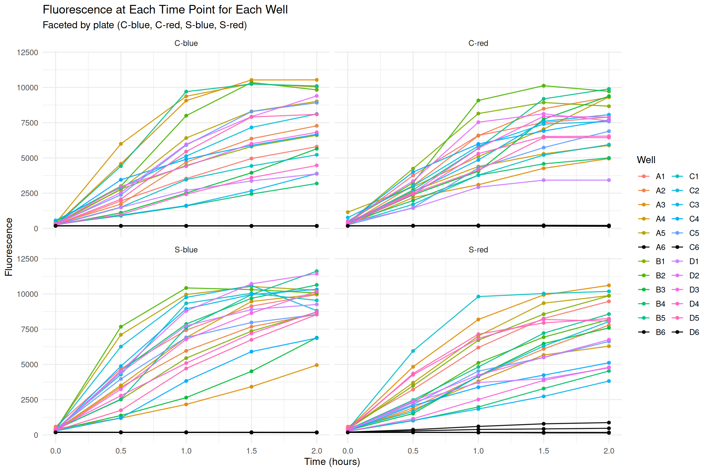
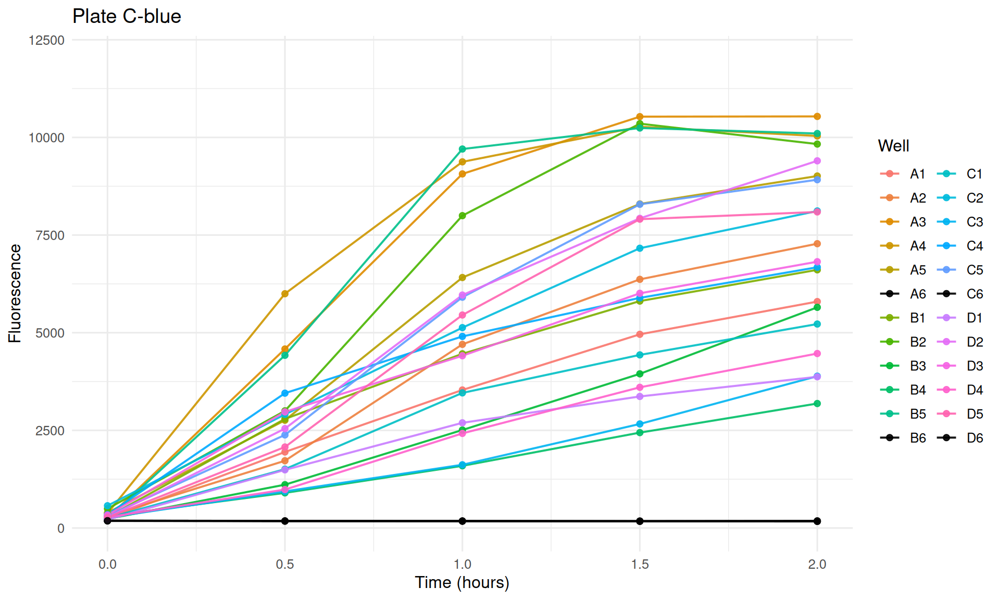
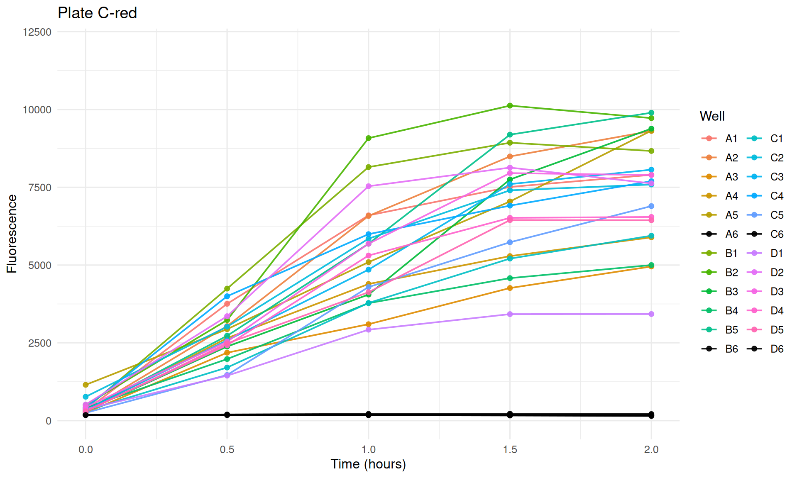
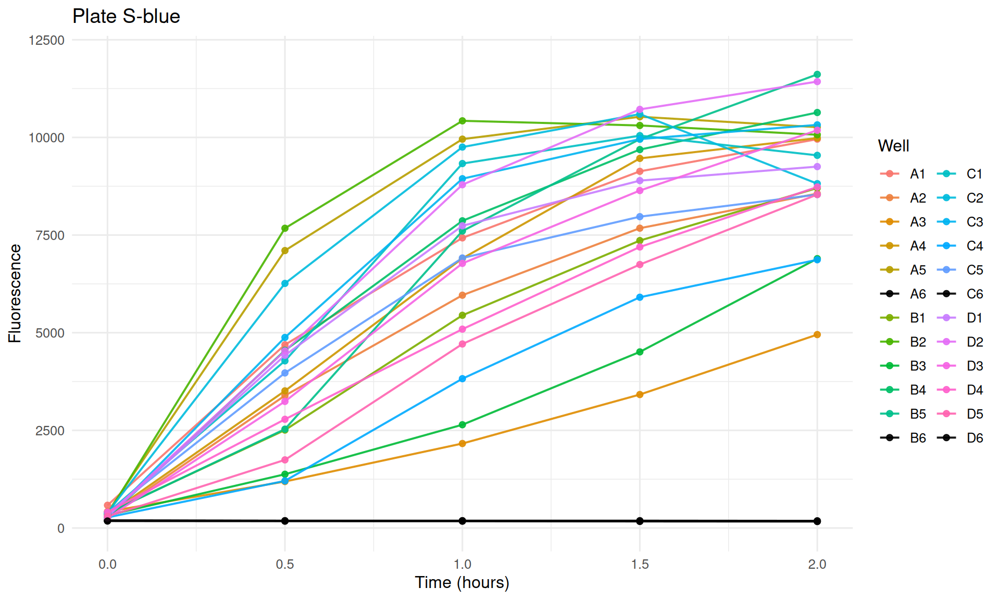
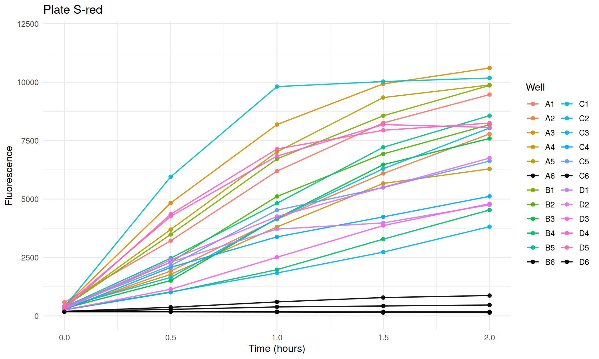

library(dplyr)
library(tidyr)
library(ggplot2)
library(readr)
library(stringr)
library(purrr)Clam Plate Fluorescence by Well
Overview
This report reads all plate reader exports in this directory and plots fluorescence across time for each well, separated by plate:
C-blueC-redS-blueS-red
Read and Parse Data
# Find all plate text exports in this folder.
files <- list.files(pattern = "^plate-.*\\.txt$", full.names = TRUE)
if (length(files) == 0) {
stop("No plate-*.txt files found in this directory.")
}
parse_plate_file <- function(path) {
lines <- readLines(path, warn = FALSE)
# Data rows are A-D rows from 24-well plate exports.
data_lines <- lines[str_detect(lines, "^[A-D]\\t")]
if (length(data_lines) == 0) {
stop(paste("No well data rows found in", basename(path)))
}
well_df <- map_dfr(data_lines, function(x) {
parts <- str_split(x, "\\t", simplify = TRUE)
# Keep row letter and first 6 columns only; ignore trailing filter metadata text.
row_letter <- parts[1]
vals <- suppressWarnings(as.numeric(parts[2:7]))
tibble(
row = row_letter,
col = 1:6,
fluorescence = vals
)
}) %>%
mutate(well = paste0(row, col))
fname <- basename(path)
# Filename pattern: plate-[C|S]-[blue|red]-Tn.n*.txt
treatment <- str_match(fname, "^plate-([CS])-.*$")[, 2]
plate_color <- str_match(fname, "^plate-[CS]-([a-zA-Z]+)-.*$")[, 2]
time_hours <- parse_number(str_extract(fname, "T[^.]+\\.[0-9]+|T[0-9]+"))
well_df %>%
mutate(
file = fname,
treatment = treatment,
plate_color = plate_color,
plate_id = paste(treatment, plate_color, sep = "-"),
time_hours = time_hours
)
}
fluor_long <- map_dfr(files, parse_plate_file) %>%
arrange(plate_id, well, time_hours)
# Build a consistent well color map and force Column 6 wells to black.
well_levels <- sort(unique(fluor_long$well))
well_colors <- setNames(scales::hue_pal()(length(well_levels)), well_levels)
well_colors[str_detect(names(well_colors), "6$")] <- "black"
# Save plots to a local output folder.
plot_dir <- "plots"
dir.create(plot_dir, showWarnings = FALSE, recursive = TRUE)
fluor_long# A tibble: 480 × 9
row col fluorescence well file treatment plate_color plate_id
<chr> <int> <dbl> <chr> <chr> <chr> <chr> <chr>
1 A 1 230 A1 plate-C-blue-T… C blue C-blue
2 A 1 1947 A1 plate-C-blue-T… C blue C-blue
3 A 1 3534 A1 plate-C-blue-T… C blue C-blue
4 A 1 4959 A1 plate-C-blue-T… C blue C-blue
5 A 1 5797 A1 plate-C-blue-T… C blue C-blue
6 A 2 304 A2 plate-C-blue-T… C blue C-blue
7 A 2 1722 A2 plate-C-blue-T… C blue C-blue
8 A 2 4702 A2 plate-C-blue-T… C blue C-blue
9 A 2 6366 A2 plate-C-blue-T… C blue C-blue
10 A 2 7279 A2 plate-C-blue-T… C blue C-blue
# ℹ 470 more rows
# ℹ 1 more variable: time_hours <dbl>Plot: Fluorescence Over Time by Well Within Plate
p_all <- ggplot(fluor_long, aes(x = time_hours, y = fluorescence, color = well, group = well)) +
geom_line(linewidth = 0.6, alpha = 0.9) +
geom_point(size = 1.5, alpha = 0.9) +
scale_color_manual(values = well_colors) +
facet_wrap(~ plate_id) +
coord_cartesian(ylim = c(0, 12000)) +
labs(
title = "Fluorescence at Each Time Point for Each Well",
subtitle = "Faceted by plate (C-blue, C-red, S-blue, S-red)",
x = "Time (hours)",
y = "Fluorescence",
color = "Well"
) +
theme_minimal(base_size = 12)
print(p_all)
ggsave(
filename = file.path(plot_dir, "fluorescence-by-well_all-plates.png"),
plot = p_all,
width = 12,
height = 8,
dpi = 300
)Optional: One Plot Per Plate
plate_ids <- unique(fluor_long$plate_id)
for (pid in plate_ids) {
dat <- fluor_long %>% filter(plate_id == pid)
p <- ggplot(dat, aes(x = time_hours, y = fluorescence, color = well, group = well)) +
geom_line(linewidth = 0.7, alpha = 0.9) +
geom_point(size = 1.8, alpha = 0.9) +
scale_color_manual(values = well_colors) +
coord_cartesian(ylim = c(0, 12000)) +
labs(
title = paste("Plate", pid),
x = "Time (hours)",
y = "Fluorescence",
color = "Well"
) +
theme_minimal(base_size = 12)
print(p)
safe_pid <- str_replace_all(pid, "[^A-Za-z0-9_-]", "_")
ggsave(
filename = file.path(plot_dir, paste0("fluorescence-by-well_", safe_pid, ".png")),
plot = p,
width = 10,
height = 6,
dpi = 300
)
}


